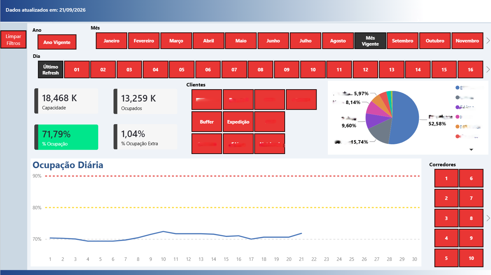
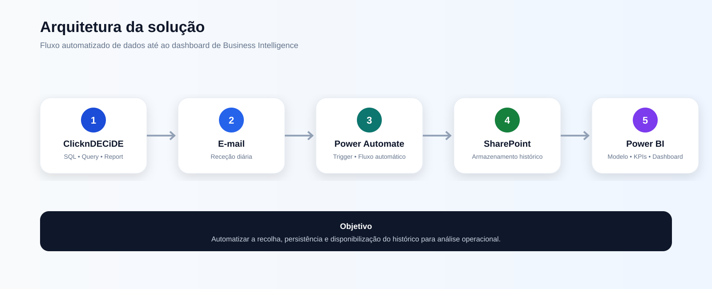

Relatório histórico de ocupação operacional construído através de um fluxo integrado de extração, automação, armazenamento e visualização.

O desafio
O processo dependia da geração de um report com dados preparados em ClicknDECiDE/SQL e da sua distribuição diária por e-mail. A solução criada automatiza a passagem dessa informação para um armazenamento histórico e disponibiliza os dados para análise no Power BI.
Arquitetura

Stack
Extração e preparação com SQL.
Distribuição automática do report.
Orquestração do processo.
Armazenamento do histórico.
Modelo, indicadores e visualização.
Estruturação do fluxo de dados entre diferentes ferramentas e etapas do processo.
Redução de tarefas repetitivas através de um processo acionado automaticamente pela chegada do report.
Transformação do histórico em indicadores, filtros e acompanhamento da ocupação ao longo do tempo.